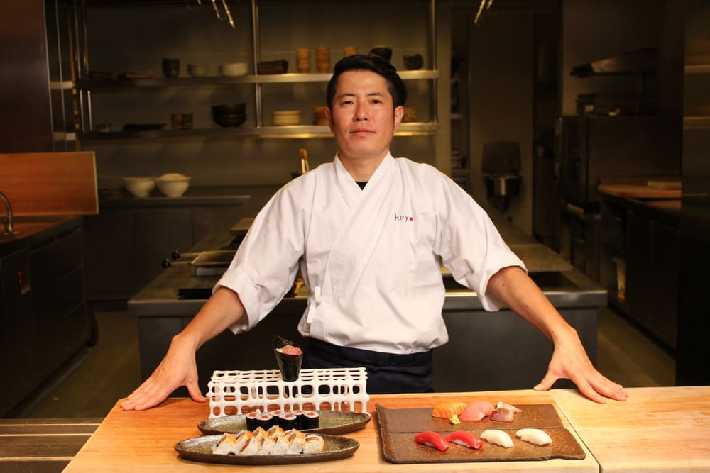

Nuestra Historia
Kōkai Sushi nació del amor por la cocina japonesa y la pasión por compartir experiencias únicas a través del sabor. Todo comenzó con un pequeño equipo de jóvenes amantes del sushi, que soñaban con acercar la tradición japonesa al público peruano, fusionando técnicas ancestrales con los mejores ingredientes locales.
Nuestro nombre, Kōkai, significa “viaje por mar” en japonés, y representa nuestro camino constante hacia la excelencia, la exploración y la innovación culinaria. Cada plato que servimos es el resultado de ese viaje: una mezcla entre el respeto por la cultura oriental y la creatividad de nuestra identidad peruana.
Desde nuestros inicios, nos propusimos ofrecer makis frescos, coloridos y elaborados con productos de la más alta calidad. Con el tiempo, Kōkai Sushi se ha convertido en un punto de encuentro para los que disfrutan de la buena comida, la atención personalizada y un ambiente que celebra la fusión entre dos culturas gastronómicas poderosas.
Hoy seguimos creciendo con el mismo espíritu con el que comenzamos: brindar a nuestros clientes una experiencia auténtica, cálida y llena de sabor. Porque para nosotros, cada maki cuenta una historia, y queremos que cada visita sea parte de la tuya.
Misión
Brindar una experiencia culinaria inolvidable, combinando la calidad, el servicio y el respeto por la tradición japonesa.
Visión
Convertirnos en la marca de sushi más reconocida del país por nuestra innovación, sabor y compromiso con la excelencia.
Nuestro Equipo
Contamos con chefs altamente capacitados en técnicas japonesas, apasionados por el arte de la cocina y comprometidos con la satisfacción de cada cliente.
